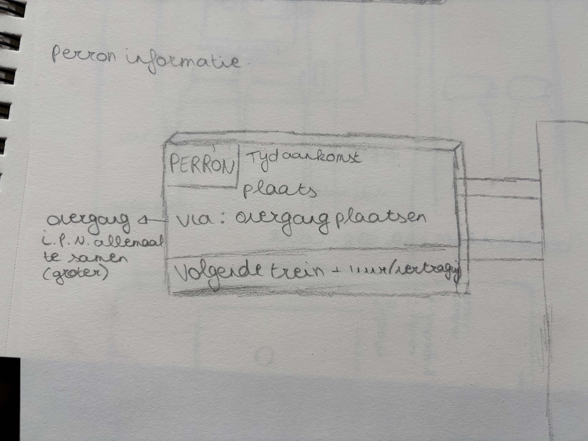
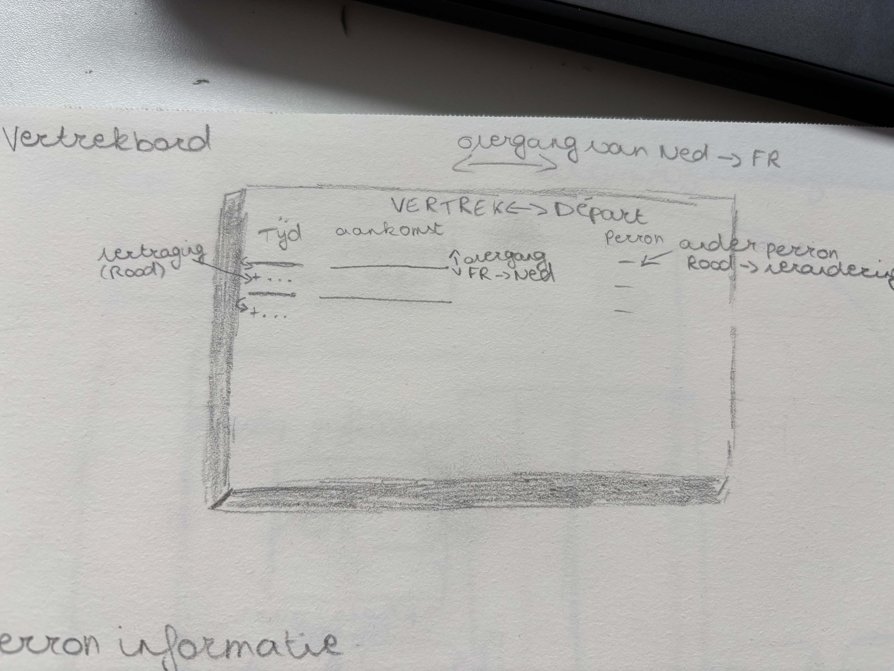
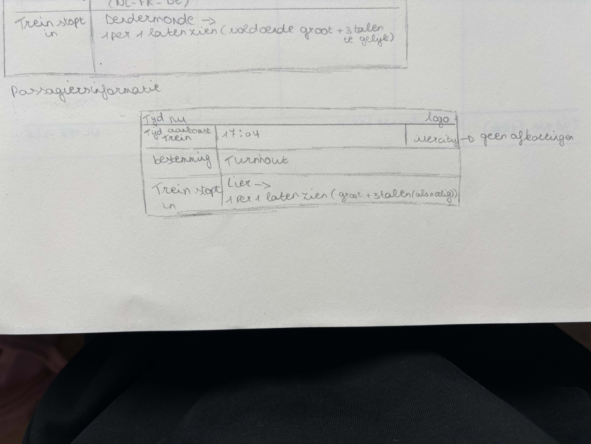
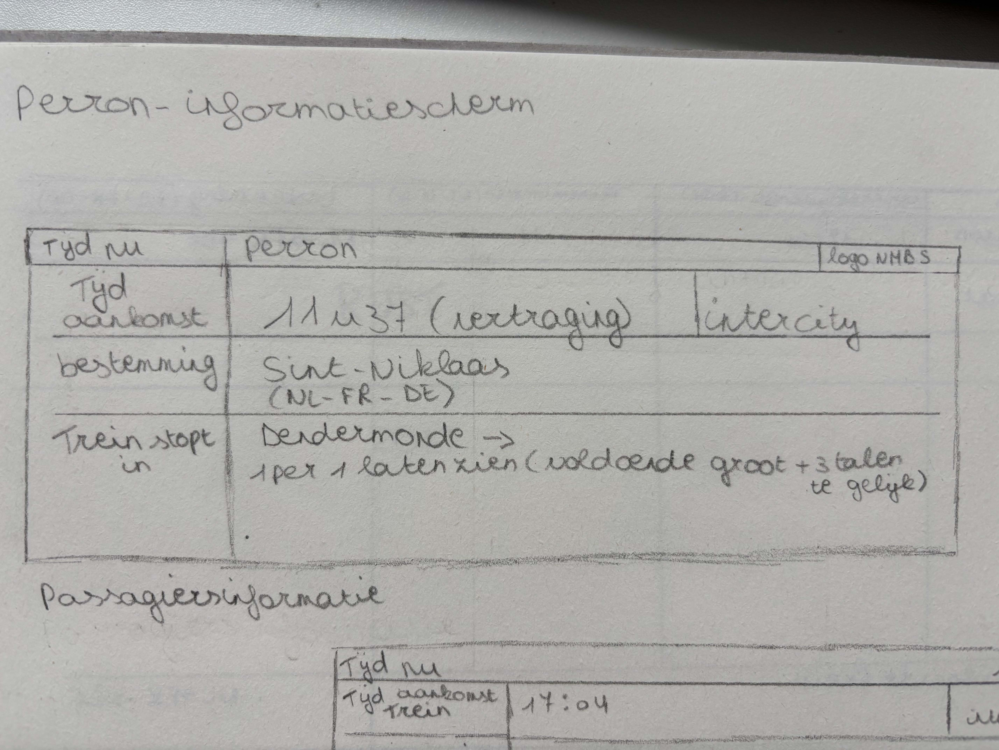
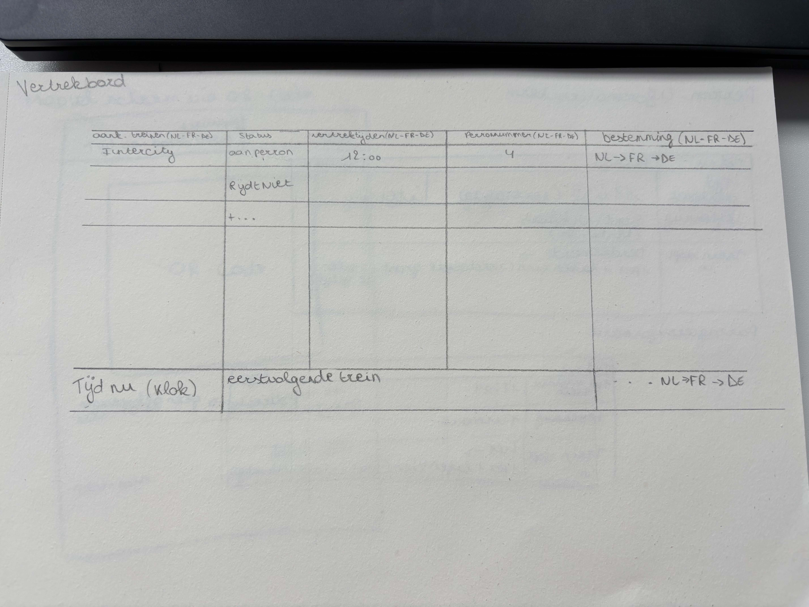
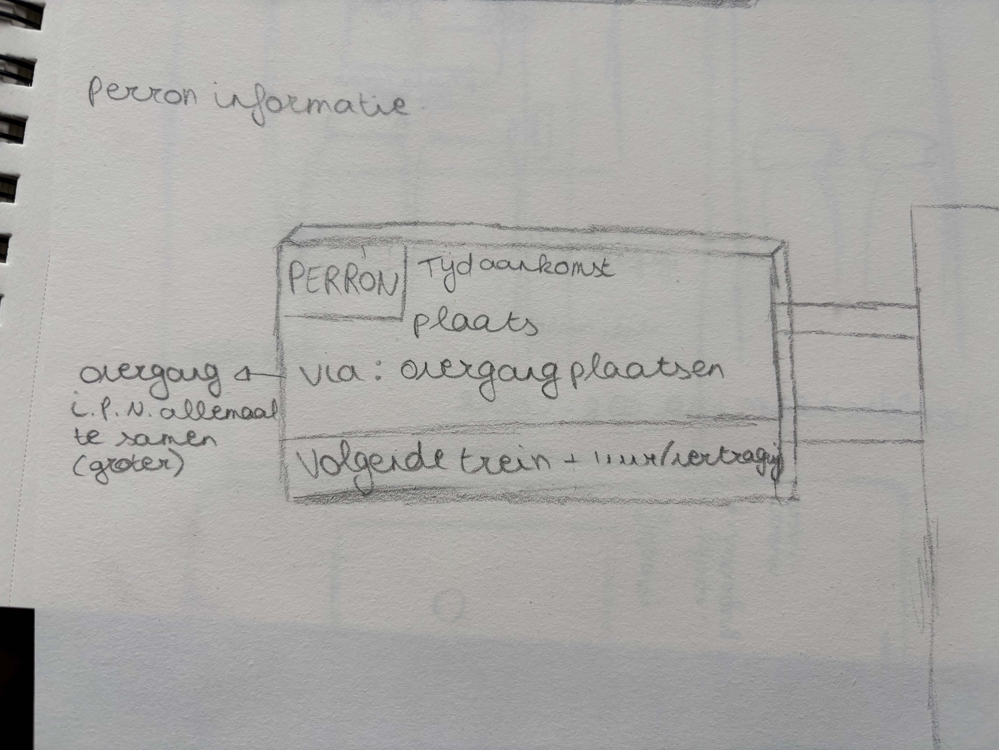
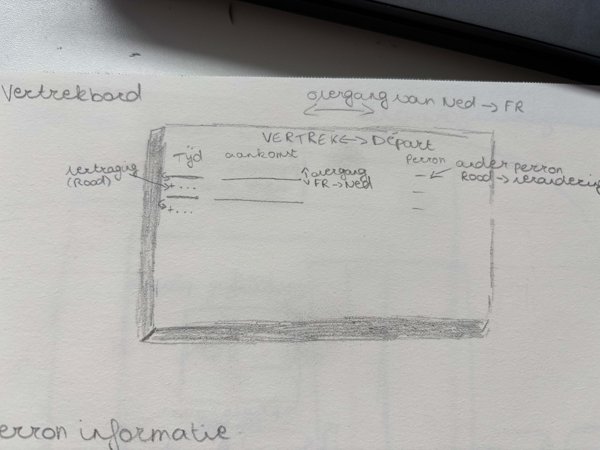
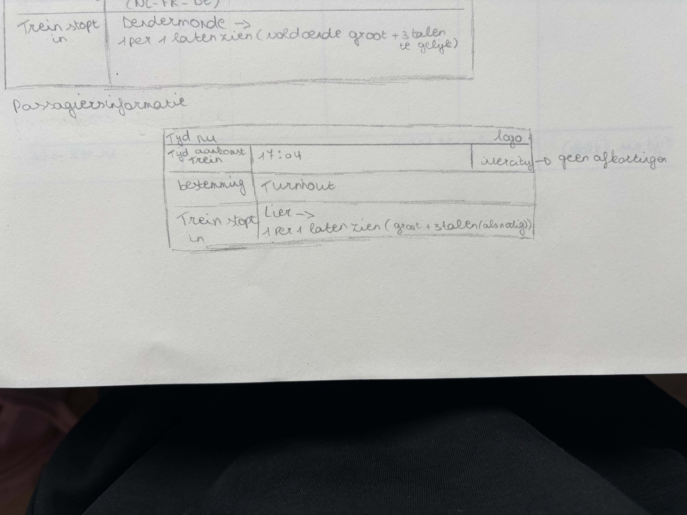
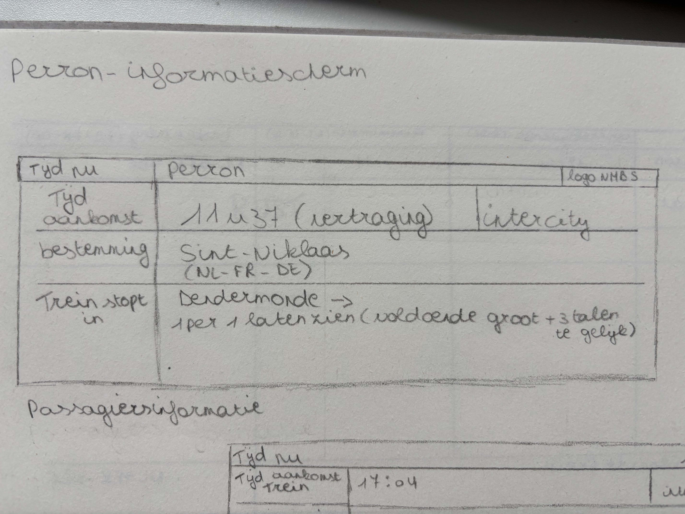
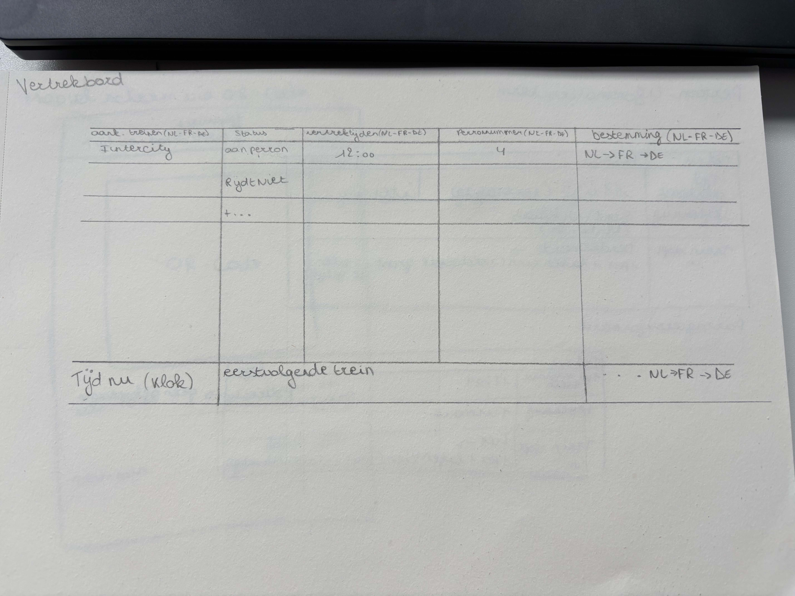

Schetsen
Low-fi
Documentatie
In week 1 moesten we onze eerste ideeën van een treinbord op papier schetsen. Dit moest in low-fi schetsen. Ik wist eerst niet wat ze hiermee bedoelde dus ik schetste een echt bord met daar wat info in. Maar na wat uitleg in de klasgroep zag ik dat ik dus niet goed bezig was. Ik heb dus mijn schetsen aangepast en er andere gemaakt. Simpel maar met een logische indeling. Veel detail zat er nog niet in maar dat moest ook nog niet in deze schetsen. Op de eerste 3 foto's kan je zien dat ik dus eerst echte borden had getekend omdat ik dacht dat dat de opdracht was. Op de andere 3 foto's kan je zien dat ik echt wireframes heb gemaakt. Ze waren nog niet helemaal wat ze moesten zijn maar ik dacht ik ga hiermee naar de les zodat ik hier al feedback op kan krijgen. Zelf vond ik dit wel moeilijk om te maken omdat ik nog geen voorkennis had waardoor ik niet zo goed wist wat low-fi schetsen en wireframes waren. Maar door uitleg te vragen aan mijn medestudenten heb ik mijn schetsen kunnen aanpassen. Ik heb mijn best gedaan om echt er goed over na te denken maar ik dacht ik ga het even zo laten zodat ik het nog na de les kan verbeteren.
Het was een uitdagende maar leerzame start!
Foto's
 








